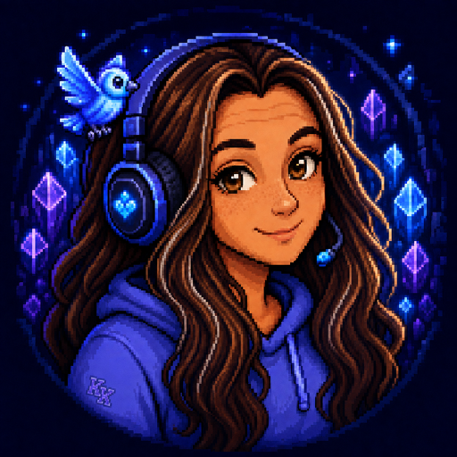

A tiny celebration
FunTimes
I notice the satisfying little patterns hiding in the clock—1:11, 12:34, and all their friends. FunTimes turns those passing moments into reasons to pause and celebrate.
Catch a FunTime
currently curiousPlayer one has entered
I love games, computers, and the delightful little spark that happens when an idea becomes something you can actually play with.
This site is my digital nook: part playground, part sketchbook, and part collection of tiny experiments. I’m happiest learning how things work, making them feel a little more magical, and seeing where curiosity leads next.
A few save files
A tiny celebration
I notice the satisfying little patterns hiding in the clock—1:11, 12:34, and all their friends. FunTimes turns those passing moments into reasons to pause and celebrate.
Catch a FunTimeStill taking shape
Rymes is part of the story, too—an idea with its own rhythm that’s still finding its final form. Some projects arrive fully mapped; the best ones sometimes begin with a name and a feeling.
More to come ✦Made to be explored
From daily words to pixel adventures, I like building playful corners of the internet where useful things can still have personality—and surprises are always welcome.
Go adventuringThe short version
“Make it work. Make it lovely. Leave room for a little magic.”
I’m always learning, always tinkering, and probably one oddly satisfying detail away from starting another project.